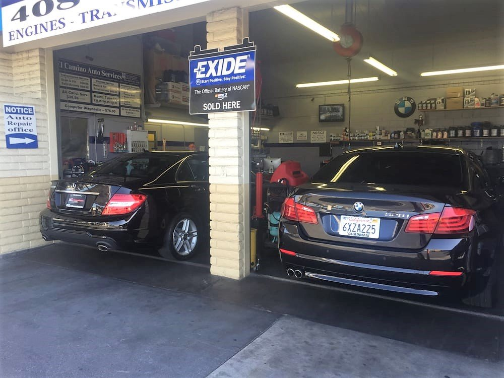
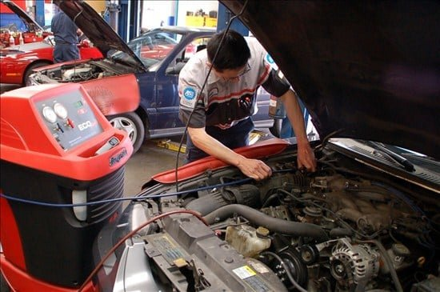

01 / SERVICE
Engines & transmissions
Diagnosis, repair and replacement, from engine work to transmission builds.
A family-owned, full-service auto repair shop on El Camino Real. Engines, transmissions, tune-ups, A/C and everyday maintenance for domestic and foreign vehicles.

SCHEDULE YOUR SERVICE(408) 621-8701From a check-engine light to a transmission rebuild, start with a call. We’ll diagnose the problem and walk you through the repair before work begins.
Diagnosis, repair and replacement, from engine work to transmission builds.
Brake jobs, A/C service, batteries, charging and starting systems, and computer diagnostics.
Scheduled maintenance, oil changes and tune-ups to keep your car running at its best.

Preferred Auto Repair has served Santa Clara drivers for over a decade. The goal is simple: honest, reliable and affordable work, explained clearly and finished on time.
The storefront, the bays and the work. Select a photo for a closer look.
Photos from the business’s public Yelp listing and former website. Final photo selection is subject to business approval. Photo source
“we continue to appreciate the professional skills of owner Fernando and his mechanics”
Call to describe the problem, check availability and schedule a time to bring your car in.
Your vehicle’s make, model and year, what you’re noticing (noises, warning lights, smells) and when it started.
Yes. The shop services both domestic and foreign vehicles, including European makes.
Yes. After diagnosis you’ll get a quote to approve before any repair begins.
This is an independent design concept prepared by Aansh Bali. Business information and images need the business’s approval before an official launch.
Describe the problem. Get a diagnosis. Approve the repair.